aNZac Build
a Kodi
build for the lands down under
Please Note:
aNZac Build is a collection of third party
Kodi media player add-ons that search the Internet and provide
links to on-line content that is publicly available.
aNZac Build is not responsible for the content streamed to your device and neither does it condone piracy so you must satisfy yourself
that either you or the sites accessed for streaming have the copyright agreements in place and are entitled to access this content.
aNZac Build does not host or upload any video, films, media file, live streams
(avi, mov, flv, mpg, mpeg, divx, dvd rip, mp3, mp4, torrent, ipod, psp).
aNZac Build is not responsible for the accuracy, compliance, copyright, legality, decency, or any other aspect of the content streamed
to or from your device. If you have any legal issues please contact the appropriate media file owners or host sites.
aNZac Build has no control over the links on any site that it provides a link to. If you see any form of infringements,
please contact the appropriate media file owners or host sites immediately.
Guides for aNZac Build
aNZac Tools
aNZac Tools, the aNZac Build add-on
The aNZac Tools add-on is used to install, update and maintain aNZac Build for Kodi as well as providing speed test and a kodi update function for
Android ArmV7 systems.
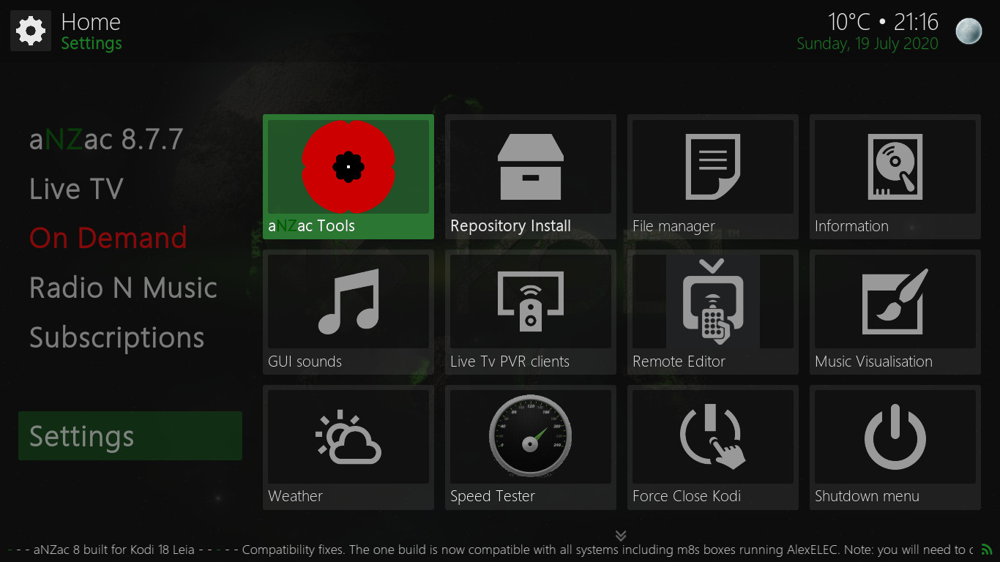
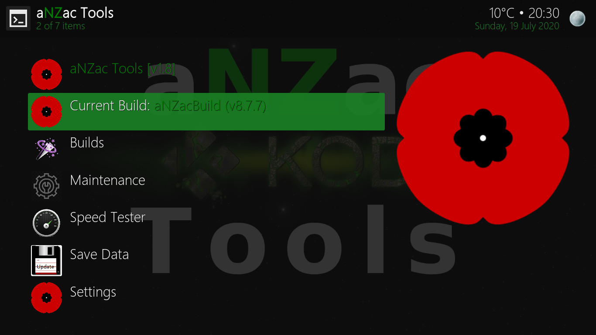
To open aNZac Tools navigate DOWN to 'Settings' and RIGHT to 'aNZac Tools' and press OK (pictured left)
Now aNZac Tools will open. The top line displays the current aNZac Tools version.
The second line displays the currently installed aNZac Build version as well as weather an update is available. (pictured right)
Updates
The aNZac Tools add-on will notify you on system startup if an new version of aNZac Build is available. There are two options available for
installing updates. Standard install is recommended as this will keep all currently installed add-ons so you wont need to reinstall them
after updating. Fresh install will erase all add-ons etc. and then perform a fresh install of the build. If you missed an update for
some reason manual install / update instructions are detailed below.
Standard Install (Recommended)
Navigate DOWN to 'Settings' and RIGHT to 'aNZac Tools' and press OK. (pictured left)
Now navigate DOWN to 'Current Build:' and press OK. (pictured right)
Note: You do not need to do this unless an update is available
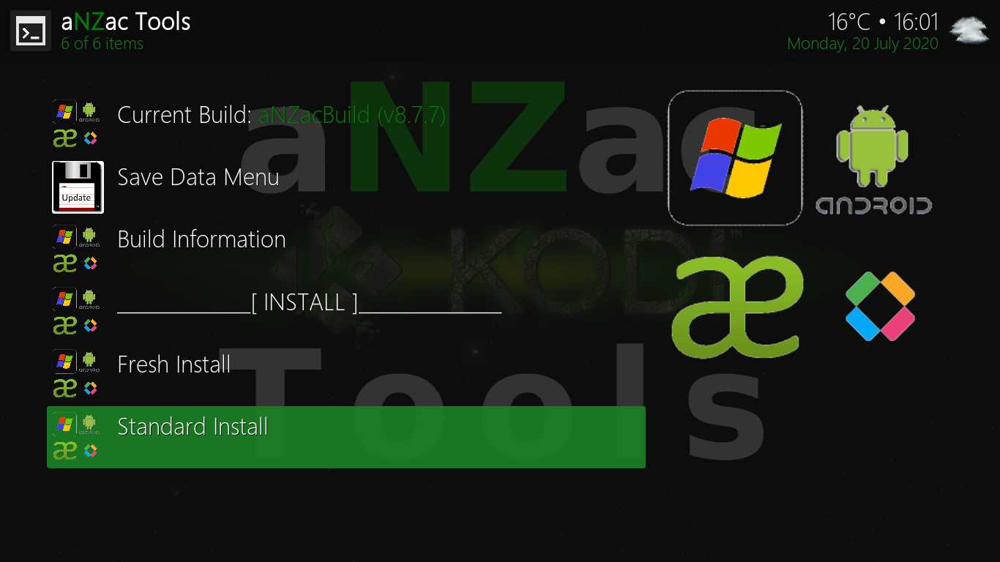
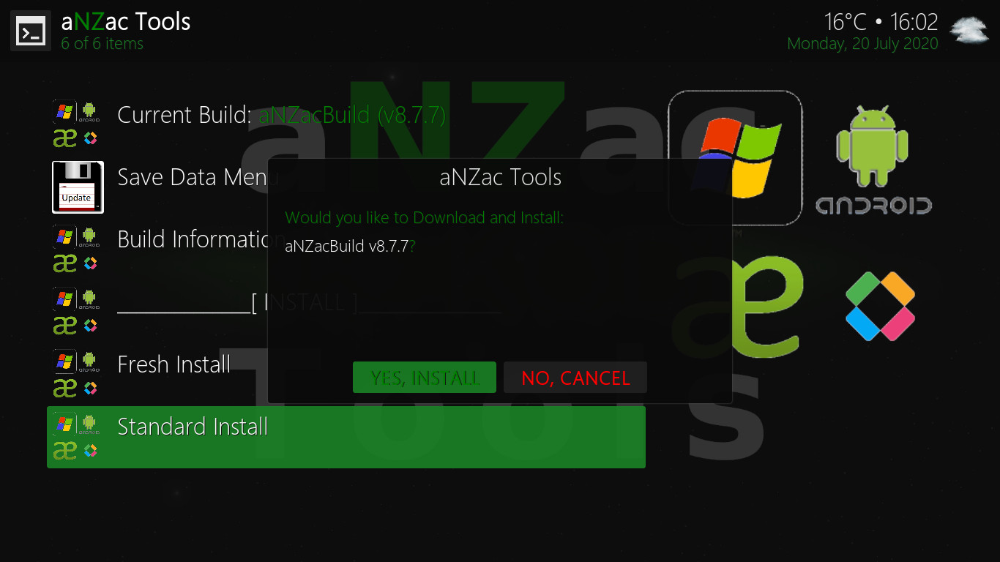
Navigate DOWN to 'Standard Install' and press OK. (pictured left)
Now Navigate RIGHT to 'YES, INSTALL' and press OK. (pictured right)
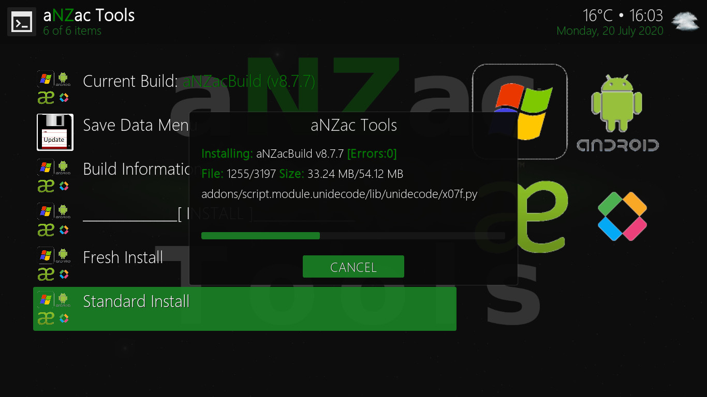
Do Nothing, aNZac Build will now download. (pictured left)
Do Nothing, aNZac Build will now install. (pictured right)
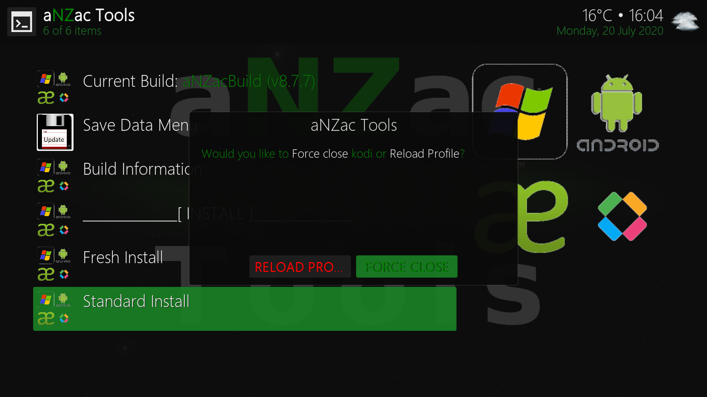
 Navigate to 'Force Close' and press OK. (Force Close should already be selected) (pictured left)
Navigate to 'Force Close' and press OK. (Force Close should already be selected) (pictured left)
Restart the Kodi app to complete the instillation. (on some devices this may happen automatically)
Note: It may take several minutes for the final updates to complete and on rear occasions the device may need to be restarted.
Fresh Install (Delete everything and start again)
Navigate DOWN to 'Settings' and RIGHT to 'aNZac Tools' and press OK. (pictured left)
Now navigate DOWN to 'Current Build:' and press OK. (pictured right)
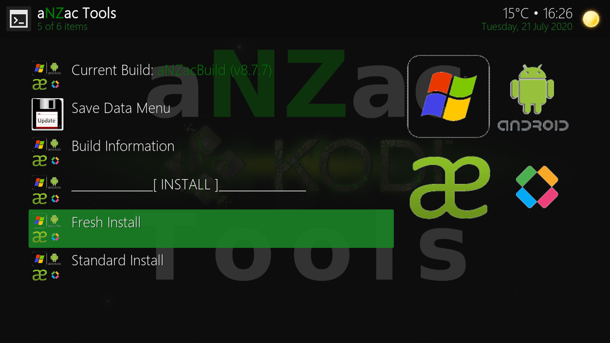
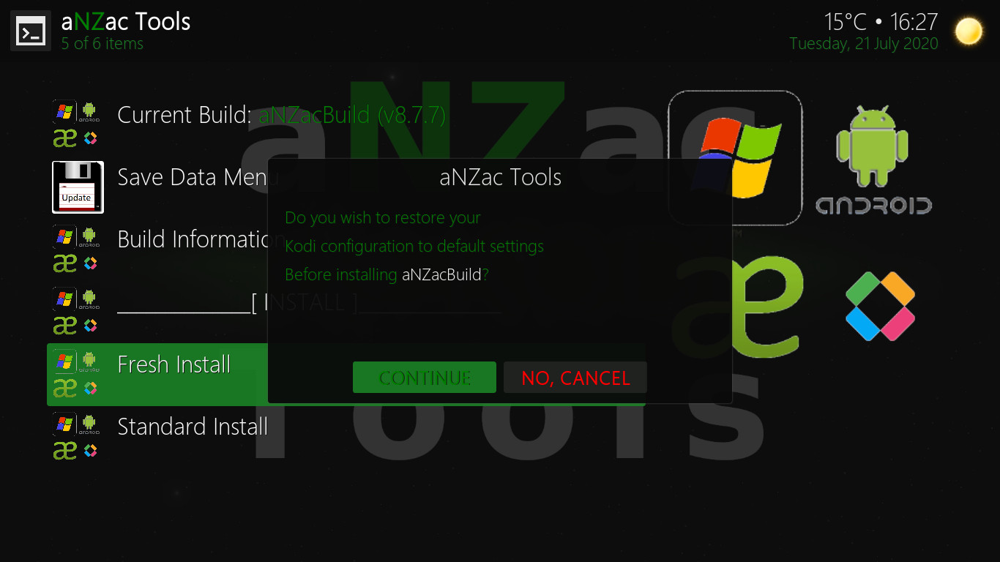
Navigate DOWN to 'Fresh Install' and press OK. (pictured left)
Now Navigate RIGHT to 'CONTINUE' and press OK. (pictured right)
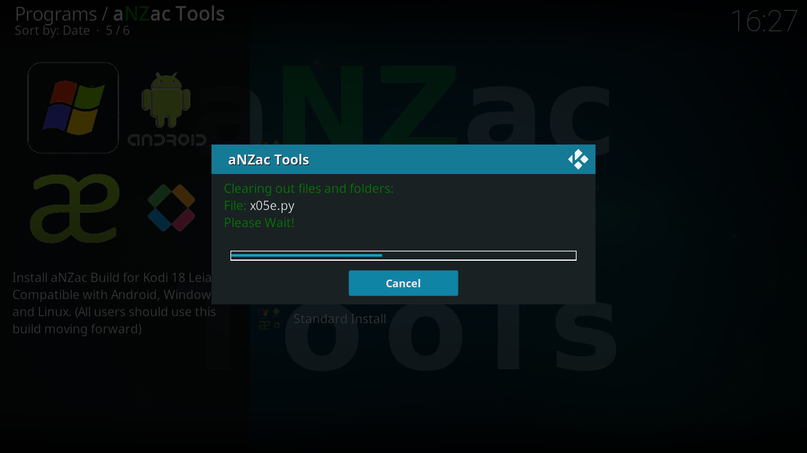
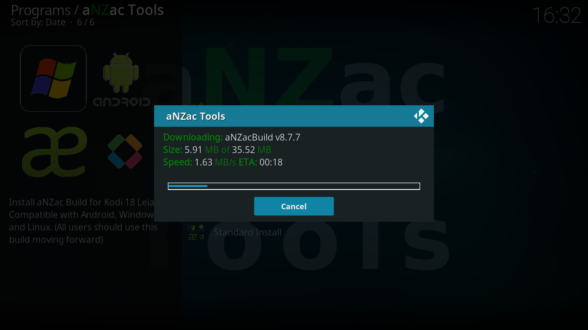
Do Nothing, aNZac Build will now delete all existing data. (pictured left)
Do Nothing, aNZac Build will now download. (pictured right)
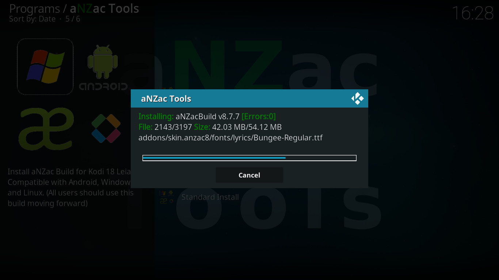
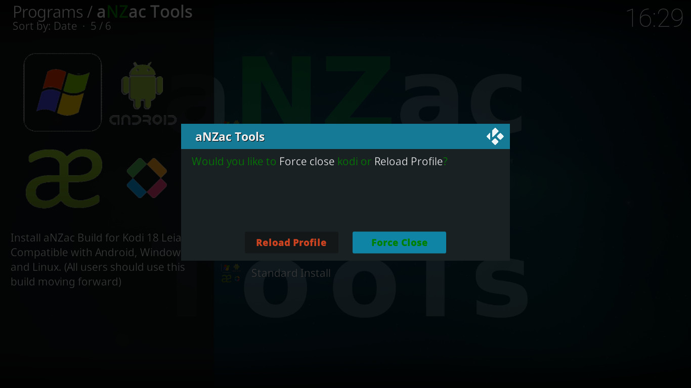
Do Nothing, aNZac Build will now install. (pictured left)
Navigate to 'Force Close' and press OK. (Force Close should already be selected) (pictured right)
Restart the Kodi app to complete the instillation. (on some devices this may happen automatically)
Note: It may take several minutes for the final updates to complete and on rear occasions the device may need to be restarted.